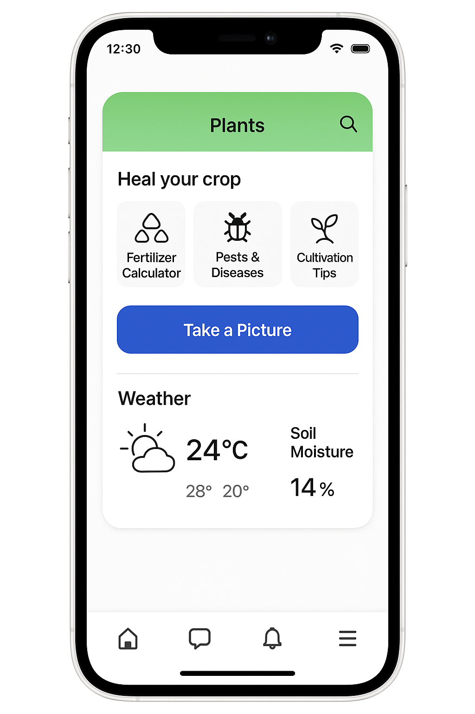
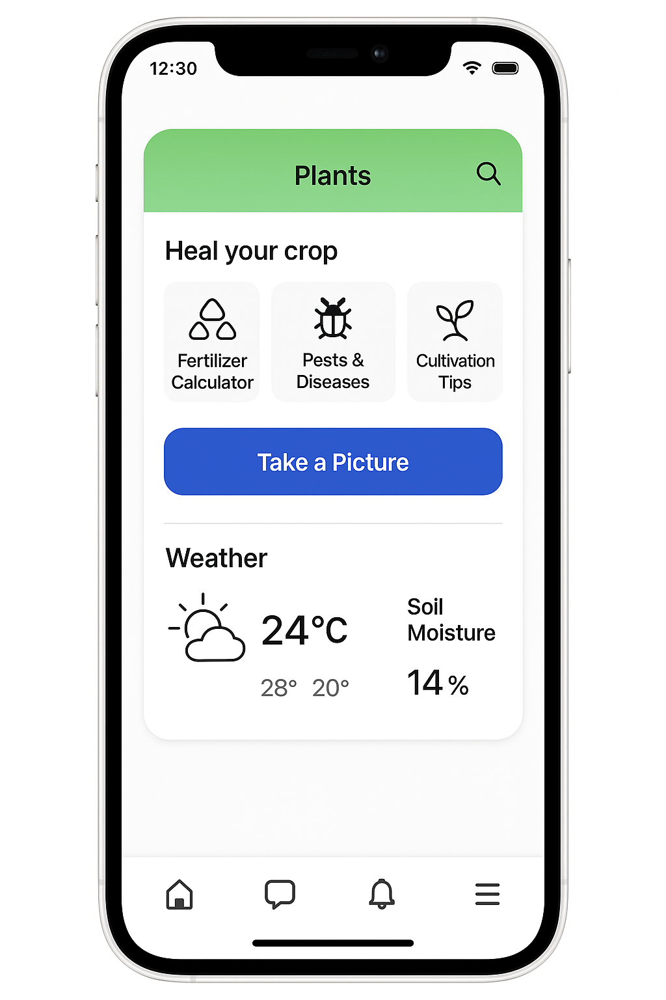

Empowering Agriculture with AI
Revolutionize your field with our smart farming assistant
Revolutionize your field with our smart farming assistant
 


Our app helps farmers diagnose and treat crop problems,
improve productivity, and provide expert farming knowledge.
Achieve your agricultural goals with smart AI assistance.
Trusted by thousands in the global farming households.

Take a picture of your crop and receive instant, offline diagnosis powered by AI. Fast, reliable, and easy to use.
Try the Diagnosis Tool
Access community-sourced knowledge and expert suggestions to guide your farming practices more effectively.
Learn More
Use our disease library and treatment database to safeguard your harvests and maximize productivity.
View LibraryAvailable on Android and iOS